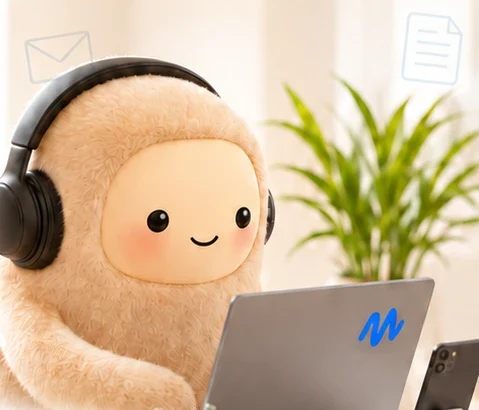
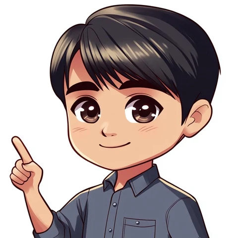

約35秒・操作デモ
SNS運用
Threads投稿管理
SNSの下書きや承認状況を一覧に。投稿前の確認をまとめる画面の制作例です。
主催：久留米市東倫理法人会
久留米周辺の経営者・個人事業主の方へ
AI初心者向け｜ランチAI勉強会
「こんなのが欲しい」を、言葉にするところから。
AI「Muse」を使い、自分のSNS投稿やオリジナルツール・アプリを実際に作ることを目指す体験型の勉強会です。
AI初心者歓迎 ／ 事前のMuse登録不要 ／ 無料プランの範囲で体験
参加費は当日、会場でお支払いください

Museのマスコット、Jolly（ジョリー）です！
開催日時：
2026年12.03（木）
13:00受付開始
13:30ランチ交流会
14:00セミナー開始
15:30セミナー終了
制作例を動画で見る
Museで作った試作アプリの操作デモです。SNS運用・事務・店舗の仕事・交流の記録。あなたの仕事なら、何を作ってみたいですか？
各動画の再生ボタンからご覧いただけます。音声はありません。
SNS運用
SNSの下書きや承認状況を一覧に。投稿前の確認をまとめる画面の制作例です。
日々の事務
月ごとの支出・科目別内訳をひと目で確認。記録を見返せる管理画面の制作例です。
店舗の仕事
予約や来店履歴、声をかけたいお客様を一覧に。サンプル顧客を使った操作例です。
交流・営業
会った相手や会話のメモ、次に連絡する予定を整理。つながりを見返せる画面の制作例です。
動画は試作版の制作例です。講座では、Museの無料プランの範囲で、各自のSNS投稿やオリジナルツール・アプリ作りに取り組みます。
当日作るもの・体験の流れを見るこんなお悩みありませんか？
触ってみたけど「質問に答えてもらうだけ」で終わっている。何から始めればいいか分からない。
ちょっとした計算や確認を、その都度手作業で。「これだけできればいいのに」と思うことがある。
ネタが浮かばない、文章に時間がかかる。やらなきゃと思いながら、結局止まってしまう。
チラシや告知文を毎回一から作るのは大変。広報も集客も、担当は自分ひとり。
「自分の仕事にも使えそう」を見つける時間に。
ランチを囲みながら、経営者同士の情報交換も楽しめます。
当日作るもの
SNS投稿・オリジナルツール・アプリ作りに、各自で取り組みます。「こんなものがあったら便利」をMuseに伝え、形にしていくことが当日のゴールです。
01
お店やサービスの魅力を伝える投稿を。
こんなふうに頼む「私のお店の特徴をもとに、来週のSNS投稿を作って」
目指すゴール自分の仕事に合う投稿を作り、伝えたい内容に整える。
02
日々の小さな手間を、自分に合う仕組みに。
こんなふうに頼む「人数と単価を入れると、合計金額が分かるツールを作って」
目指すゴール使いたい機能を伝えて、作ったツールを動かしてみる。
03
頭の中のアイデアを、使える形に。
こんなふうに頼む「やることを追加して、終わったらチェックできるアプリを作って」
目指すゴール画面や動きを確かめ、使いやすくするための修正も頼んでみる。
上の頼み方や制作物は一例です。作る内容は、各自の仕事や関心に合わせて考えます。
Museの事前登録は不要です。当日は無料プランの範囲で制作を体験します。無料プランには利用上限があるため、その範囲に合わせて進めます。
講師紹介

AI漫画販促・AI活用支援｜大川屋
佐賀を拠点に、AI漫画による販促制作とAI活用支援に取り組んでいます。IT・AIが苦手な起業家・個人事業主・店舗経営者に向けて、仕事に役立つ使い方を伝えています。
行政向けの広報制作、チラシ・バナー・Web制作、AIスクールでの講師活動など、制作と活用支援の両面で活動しています。
Muse（ミューズ）とは
頼みごとを、
作業へつなぐAI。
調べものも、予定の確認も、SNSの投稿も。
Museは、日々の仕事をサポートするパーソナルAIエージェント。
連携するアプリや操作の権限は、自分で設定できます。
01
InstagramやFacebookを運営するMeta社のAIエージェント。2026年9月にアメリカで登場し、日本でも提供が始まったばかりです。
02
カレンダー・メール・SNSと連携して、質問に答えるだけでなく、実際の作業まで進めてくれます。
03
連携先やアクセス権限を自分で選び、送信などの重要な操作は承認設定を確認しながら使います。作成された文章や内容も、自分で確かめることが大切です。
答えるAIから、実行するAIへ。仕事を手伝ってもらう使い方を、実演で紹介します。
タイムスケジュール
開催概要
| イベント名 | ランチAI勉強会 |
|---|---|
| 日時 | 2026年12月3日（木） 13:00 受付／13:30 ランチ交流会 14:00〜15:30 セミナー／16:00 退出 |
| 会場 | 久留米シティプラザ 小会議室（久留米市六ツ門町8-1） |
| 参加費 | 2,000円（お弁当付き）／当日、会場にてお支払い |
| 事前準備 | スマートフォンをご持参ください。Museの事前登録は不要です。 |
| 利用プラン | Museの無料プランの範囲で体験します。 |
| キャンセル | お弁当の準備があるため、開催3日前の11月30日（月）までに主催者へご連絡ください。 |
| 定員 | 20名 |
| 主催 | 久留米市東倫理法人会 |
| お問合せ | 0942-40-7250（久留米市東倫理法人会） |
よくある質問
AI初心者の方に向けた勉強会です。講師の実演とスマホでの体験を通して、身近な仕事への使い方を紹介します。
未会員の方もご参加いただけます。仕事でのAI活用に関心のある方を歓迎します。
事前登録は不要です。当日はスマートフォンをご持参ください。
有料プランへの加入は必要ありません。当日は無料プランの範囲で体験します。無料プランには利用上限があります。
SNS投稿や、自分の仕事に役立つオリジナルツール・アプリの制作に取り組みます。作りたいものを言葉でMuseに伝え、作成・動作確認・修正を体験します。
参加費は2,000円（お弁当付き）です。13:00受付、13:30ランチ交流会、14:00〜15:30セミナー、16:00退出の予定です。
参加費2,000円は当日、会場でお支払いください。お弁当代を含みます。
当日は、主催の久留米市東倫理法人会の活動や、地域の経営者と学び合い、つながる場としての魅力をご紹介する場合があります。会員以外の方もご参加いただける勉強会です。
申込ボタンからGoogleフォームにお進みください。定員は20名です。事前に確認したいことは、主催の久留米市東倫理法人会（0942-40-7250）へお問い合わせください。
SNS投稿も、自分だけのツールやアプリも。
AI初心者の方も、Museの無料プランで制作に挑戦できます。事前登録は不要です。
2026年12月3日（木）久留米シティプラザ 小会議室／参加費2,000円（お弁当付き）・定員20名
申込はこちらから
スマホで読み取れます